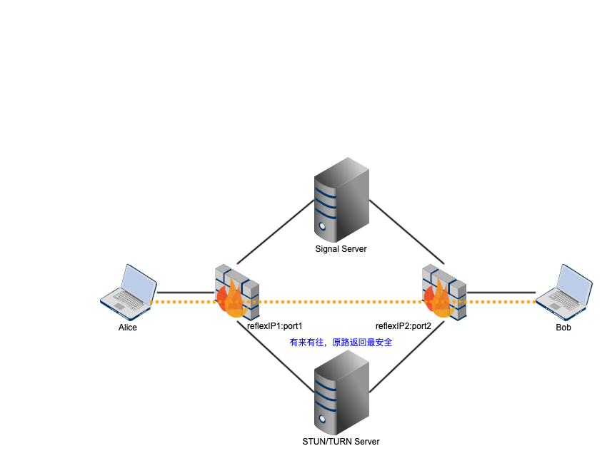

Journal on 2021-05-06
Posted on Thu 06 May 2021 in Journal
Thinking
但愿不厌其烦，笔耕不辍
Quote
Program

Turn Server
Coturn: https://github.com/coturn/coturn
— refer to https://github.com/coturn/coturn/blob/master/INSTALL
git clone https://github.com/coturn/coturn.git
cd coturn
- vi install_deps.sh
yum install -y openssl-devel
yum install -y sqlite
yum install -y sqlite-devel
yum install -y libevent
yum install -y libevent-devel
#yum install postgresql-devel
#yum install postgresql-server
#yum install mysql-devel
#yum install mysql-server
#yum install hiredis
#yum install hiredis-devel
- source install_deps.sh
- ./configure
- make
- make install
1) If your system supports automatic start-up system daemon services, then to enable the turnserver as a system service that is automatically started, you have to:
a) Create and edit /etc/turnserver.conf or
/usr/local/etc/turnserver.conf .
Use /usr/local/etc/turnserver.conf.default as an example.
b) For user accounts settings: set up SQLite or PostgreSQL or
MySQL or MongoDB or Redis database for user accounts.
Use /usr/local/share/turnserver/schema.sql as SQL database schema,
or use /usr/local/share/turnserver/schema.userdb.redis as Redis
database schema description and/or
/usr/local/share/turnserver/schema.stats.redis
as Redis status & statistics database schema description.
If you are using SQLite, the default database location is in
/var/db/turndb or in /usr/local/var/db/turndb or in /var/lib/turn/turndb.
c) add whatever is necessary to enable start-up daemon for the
/usr/local/bin/turnserver.
2) If you do not want the turnserver to be a system service, then you can start/stop it "manually", using the "turnserver" executable with appropriate options (see the documentation).
3) To create database schema, use schema in file /usr/local/share/turnserver/schema.sql.
4) For additional information, run:
$ man turnserver $ man turnadmin $ man turnutils
- sqlite3 /usr/local/var/db/turndb
SQLite version 3.7.17 2013-05-20 00:56:22
Enter ".help" for instructions
Enter SQL statements terminated with a ";"
sqlite> .schema
CREATE TABLE turnusers_lt (
realm varchar(127) default '',
name varchar(512),
hmackey char(128),
PRIMARY KEY (realm,name)
);
CREATE TABLE turn_secret (
realm varchar(127) default '',
value varchar(256),
primary key (realm,value)
);
CREATE TABLE allowed_peer_ip (
realm varchar(127) default '',
ip_range varchar(256),
primary key (realm,ip_range)
);
CREATE TABLE denied_peer_ip (
realm varchar(127) default '',
ip_range varchar(256),
primary key (realm,ip_range)
);
CREATE TABLE turn_origin_to_realm (
origin varchar(127),
realm varchar(127),
primary key (origin)
);
CREATE TABLE turn_realm_option (
realm varchar(127) default '',
opt varchar(32),
value varchar(128),
primary key (realm,opt)
);
CREATE TABLE oauth_key (
kid varchar(128),
ikm_key varchar(256),
timestamp bigint default 0,
lifetime integer default 0,
as_rs_alg varchar(64) default '',
realm varchar(127),
primary key (kid)
);
CREATE TABLE admin_user (
name varchar(32),
realm varchar(127),
password varchar(127),
primary key (name)
);
启动
-
turnserver -h > help.txt
-
refer to https://github.com/coturn/coturn/wiki/
$ cd examples
$ ./scripts/rfc5769.sh
RFC 5769 message fingerprint test(0) result: success
RFC 5769 simple request short-term credentials and integrity test result: success
RFC 5769 NEGATIVE fingerprint test(0) result: success
RFC 5769 message structure, long-term credentials and integrity test result: success
RFC 5769 message encoding test result: success
RFC 5769 NEGATIVE long-term credentials test result: success
RFC 5769 message fingerprint test(1) result: success
RFC 5769 IPv4 response short-term credentials and integrity test result: success
RFC 5769 NEGATIVE fingerprint test(1) result: success
RFC 5769 IPv4 encoding result: success
RFC 5769 message fingerprint test(2) result: success
RFC 5769 IPv6 response short-term credentials and integrity test result: success
RFC 5769 NEGATIVE fingerprint test(2) result: success
RFC 5769 IPv6 encoding result: success
$ more /usr/local/etc/turnserver.conf.default
$ turnadmin -a -u walter -p **** -r fanyamin.com
$ cp /usr/local/etc/turnserver.conf.default /usr/local/etc/turnserver.conf
$ vi /usr/local/etc/turnserver.conf
listening-port=3478 #监听端口
listening-device=eth0 #监听的网卡
external-ip=xx.xx.xxx.xx #公网ip
user=walter:**** #用户名:密码
realm=fanyamin.com #一般与turnadmin创建用户时指定的realm一致
- refer to https://www.cnblogs.com/yjmyzz/p/how-to-install-coturn-on-ubuntu.html
$ turnserver -o -a -f -v -r fanyamin.com
0: log file opened: /var/log/turn_6425_2020-11-15.log
0: Config file found: /usr/local/etc/turnserver.conf
0:
RFC 3489/5389/5766/5780/6062/6156 STUN/TURN Server
Version Coturn-4.5.1.3 'dan Eider'
0:
Max number of open files/sockets allowed for this process: 65535
0:
Due to the open files/sockets limitation,
max supported number of TURN Sessions possible is: 32500 (approximately)
0:
Testing
As https://webrtc.github.io/samples/src/content/peerconnection/trickle-ice/
turn:xx.xx.xx.xx:3478 Walter/***
- refer to https://github.com/webrtc/samples/blob/gh-pages/src/content/peerconnection/trickle-ice/js/main.js